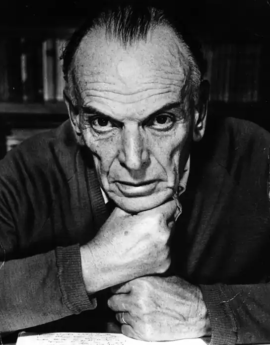

Його улюбленим жанром стає невеликий розповідь, лірично забарвлений, в центрі якого люди творчого складу, великої духовної сили, діяльно творять добро і протистоять злу.
Костянтин Георгійович Паустовський народився 19(31).5.1892 року в Москві, помер — 14.7.1968 року там же; похований у р. Таруса Калузької області.
Перше оповідання "На воді" опублікований в 1912 році. Вчився в Київському університеті (1911-13). Після Жовтневої революції 1917 співпрацював у газетах, потім ЗРОСТАННЯ — ТАСС (1924-29). Ранні твори Паустовського (збірки оповідань і нарисів "Морські начерки", 1925, "Минетоза", 1927, "Зустрічні кораблі", 1928; роман "Сяючі хмари", 1929) відрізняє гострий динамічний сюжет. Їх герої — прекраснодушні мрійники, тяготящиесябытом, ненавидять рутину, спраглі романтичних пригод. Популярність П. принесла повість "Кара-Бугаз" (1932), в якій документальний матеріал органічно сплавлен з художнім вимислом. До 30-х рр. належать повісті, різноманітні за тематикою і жанром: "Доля Шарля Лонсевиля" (1933), "Колхіда" (1934), "Чорне море" (1936), "Сузір'я гончих псів" (1937), "Північна повість" (1938; однойменний фільм 1960), а також біографічні повісті про людей мистецтва: "Ісаак Левітан", "Орест Кіпренський" (обидві — 1937), "Тарас Шевченко" (1939). У "Літніх днях" (1937), "Мещерської стороні" (1939), "Мешканців старого будинку" (1941) набуває завершеність художницька манера письменника, пильно всматривающегося в щоденне людське існування, у світ природи і розповідає про побачене з ліричним піднесенням. Його улюбленим жанром стає невеликий розповідь, лірично забарвлений, в центрі якого люди творчого складу, великої духовної сили, діяльно творять добро і протистоять злу. У 1955 Паустовський опублікував повість "Золота роза" про "прекрасної сутності письменницької праці". Багато років він работалнад автобіографічній "Повістю про життя", в якій доля автора показана на тлі процесів, що відбувалися в Росії в кінці 19-30-х роках 20 ст. Оповідання складається з шести тісно пов'язаних між собою книг ("Далекі роки", 1945; "Неспокійна юність", 1955; "Початок невідомого століття", 1957; "Час великих очікувань", 1959; "Кидок на Південь", 1960; "Книга мандрів", 1963) і по праву може вважатися підсумком творчих і моральних шукань письменника. Книги Паустовського переведені на багато іноземних мов. Нагороджений орденом Леніна, двома іншими орденами і медаллю.